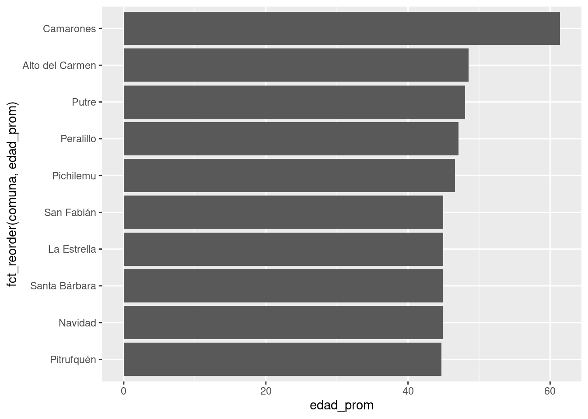
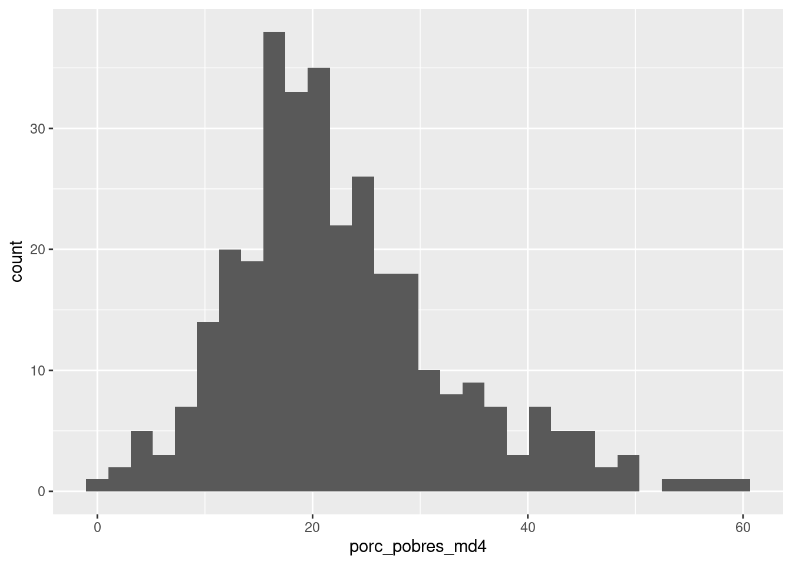

03B - Visualización de datos (extensiones)
Si quieres correr este script localmente, debe haber descargado el proyecto, como se explica al comienzo del script 3A.
Como al principio de todo script, recomiendo reiniciar R. Esto lo conseguimos con Session > Restart R y clickeando en la escoba del panel de “Environment” (superior derecho).
Cargar paquetes y datos
library(tidyverse)df_municipios <- read_rds("datos/datos_municipios.rds")Gráfico de ránking
Supongamos que queremos rankear a las comunas según su edad promedio. Podríamos hacer un gráfico de columnas:
ggplot(data = df_municipios,
mapping = aes(x = edad_prom, y = comuna)) +
geom_col()
(Al menos) dos cosas están mal con el gráfico anterior. Primero, son demasiadas observaciones. Segundo, las barras no están ordenadas. Podemos suplir ambas cosas y crear un gráfico de “ránking” que se entienda:
ggplot(data = df_municipios %>%
arrange(-edad_prom) %>% # ordenamos
slice(1:10), # seleccionamos las diez primeras
mapping = aes(x = edad_prom,
y = fct_reorder(comuna, edad_prom))) + # ordenamos
geom_col()
Ejercicio A
Genera un gráfico de ránking para las diez comunas con mayor población de la muestra.
Facetas
ggplot(data = df_municipios,
mapping = aes(x = porc_pobres_md4)) +
geom_histogram()## `stat_bin()` using `bins = 30`. Pick better value with
## `binwidth`.
ggplot(data = df_municipios,
mapping = aes(x = porc_pobres_md4)) +
geom_histogram() +
facet_wrap(~alcalde_coalicion)## `stat_bin()` using `bins = 30`. Pick better value with
## `binwidth`.
ggplot(data = df_municipios,
mapping = aes(x = porc_pobres_md4)) +
geom_histogram() +
facet_wrap(~alcalde_coalicion, nrow = 3)## `stat_bin()` using `bins = 30`. Pick better value with
## `binwidth`.
Noten que los gráficos anteriores, por defecto, las facetas comparten escalas para las variables x e y. Podemos cambiar este default con el argumento scales = "free", que también puede tomar los valores “free_x” o “free_y”. Qué queremos usar aquí dependerá de la naturaleza de nuestros datos, caso a caso…
ggplot(data = df_municipios,
mapping = aes(x = porc_pobres_md4)) +
geom_histogram() +
facet_wrap(~alcalde_coalicion, scales = "free")## `stat_bin()` using `bins = 30`. Pick better value with
## `binwidth`.
Ejercicio B
Genera un gráfico de dispersión (con geom_point()) para dos variables de la base. Luego divídelo por facetas según la coalición del(la) edil.
Gráficos de líneas
Vamos a cargar datos desde Gapminder (2010), compilados por Edgar Ruiz, Riva Quiroga y Mauricio ‘Pacha’ Vargas:
gapminder_muestra <- read_csv("datos/gapminder_muestra_es.csv")## Parsed with column specification:
## cols(
## pais = col_character(),
## anio = col_double(),
## esperanza_de_vida = col_double()
## )Podríamos querer graficar las tendencias en el tiempo para los tres países. Con las herramientas que hemos visto ahora ahora, podríamos hacer algo como lo siguiente:
ggplot(data = gapminder_muestra,
mapping = aes(x = anio, y = esperanza_de_vida, color = pais)) +
geom_point()
Esto es difícil de leer, nos vendría bien tener líneas para seguir los patrones en el tiempo. Podemos hacer esto añadiendo geom_line() y el mapeo estético group = (a veces podemos omitir esto, ggplot2 tratará de inferirlo, pero yo recomiendo utilizarlo explícitamente siempre).
ggplot(data = gapminder_muestra,
mapping = aes(x = anio, y = esperanza_de_vida, color = pais, group = pais)) +
geom_point() +
geom_line()
Más personalización
Vamos a ver cómo añadir texto dentro de los gráficos, editar las escalas (ejes y colores), etcétera, el próximo script.